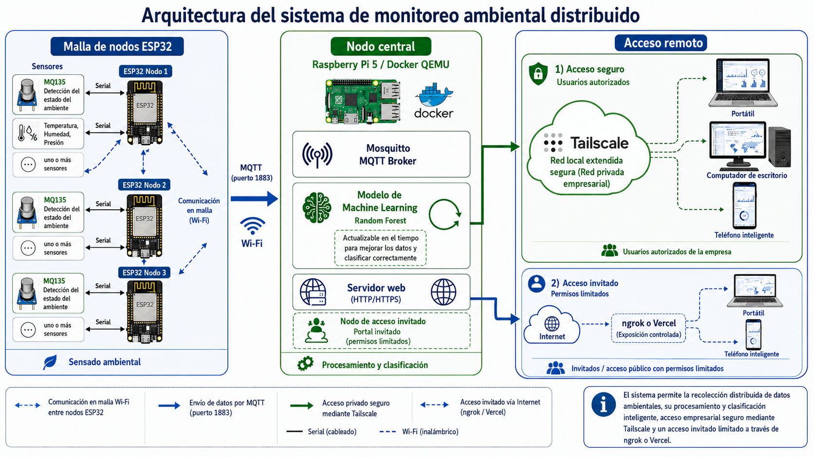
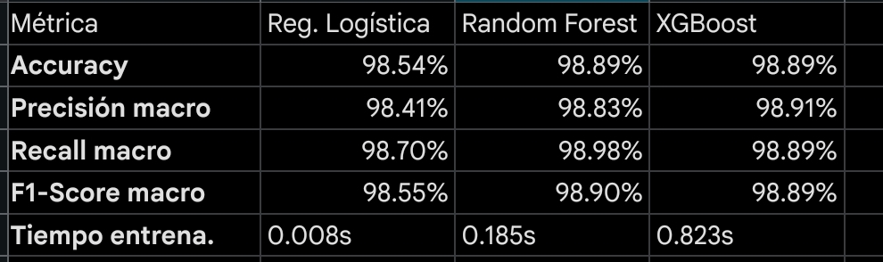

Sistema de Monitoreo Inteligente y Predicción de Ocupación
Juan Diego Lemus
Rosario Lozano
Jorge Enrique Lugo
Christian Daniel Moralez
Una topología Edge-to-Cloud distribuida con concurrencia asíncrona.

Implementación en C++ enfocada en alta disponibilidad y bajo bloqueo (Non-blocking I/O).
deltas base tras 100 muestras de calibración inicial.ArduinoJson para empacar los datos estructurados dinámicamente antes de enviar.// Loop No-Bloqueante (sin delay) con JSON
unsigned long tiempoActual = millis();
if (tiempoActual - tiempoAnterior >= 2000) {
float mq135_delta = analogRead(MQ135_PIN) - base_135;
float mq8_delta = analogRead(MQ8_PIN) - base_8;
float co2_index = (mq135_delta*0.9) + (mq8_delta*0.1);
StaticJsonDocument<200> doc;
doc["mq135"] = mq135_raw;
doc["co2_index"] = max(0.0, co2_index);
String payload;
serializeJson(doc, payload);
mqttClient.publish("salon/LAB1/gases", payload.c_str());
}La Raspberry Pi 5 opera dentro de la intranet de la Universidad. Para lograr acceso global sin abrir puertos físicos en el router universitario, desplegamos Tailscale (basado en WireGuard). Esto crea un túnel NAT encriptado Peer-to-Peer exclusivo para desarrolladores y el Profesor.
Dado que el cliente final (estudiantes) no debe instalar VPNs, el puerto 5001 del Dashboard se expone mediante túneles inversos (Ngrok) o despliegues serverless (Vercel). Esto mitiga el riesgo de ataques DDoS directos hacia el hardware del proyecto.
Superamos la limitación del GIL de Python (Global Interpreter Lock) usando subprocesos asíncronos.
mqtt_client.loop) se ejecuta en un background_task aislado para no congelar el servidor web.salon/+/gases en un solo socket.import eventlet
eventlet.monkey_patch() # Habilita concurrencia real
def handle_mqtt_message(msg):
payload = json.loads(msg.payload.decode())
# ... inferencia ML en vivo ...
socketio.emit("new_data", { "lab": lab_name, ... })
def run_mqtt():
mqtt_client.subscribe("salon/+/gases") # Wildcard topic
while True:
mqtt_client.loop(timeout=1.0)
socketio.sleep(0.1) # Cede el hilo al framework web
if __name__ == "__main__":
socketio.start_background_task(target=run_mqtt)
socketio.run(app, host="0.0.0.0", port=5000)
El sistema procesa inferencias continuas en el callback MQTT, no en lotes (Batch). En milisegundos, el vector de variables [MQ135, MQ8, CO2_Index] se inyecta en la función predict_occupancy() de Scikit-Learn que retorna el estado exacto (VACÍO, PARCIAL, OCUPADO) antes de insertarse en SQLite.
Se evaluó exhaustivamente un abanico de estimadores estadísticos y árboles de decisión (Regresión y Clasificación). Las curvas de aprendizaje y validación cruzada nos permitieron seleccionar el modelo capaz de generalizar los datos sin incurrir en memorización (Overfitting).

En lugar de agotar el Wi-Fi realizando HTTP Polling (preguntar cíclicamente), aplicamos el patrón Publish/Subscribe. Los microcontroladores publican strings JSON ultra-ligeros. El broker Mosquitto enruta los mensajes instantáneamente al backend, logrando una reducción superior al 80% en el consumo de ancho de banda y batería de los nodos.
Para reflejar alertas en el Dashboard en tiempo real (menos de 50ms de latencia) sin que el cliente recargue la página, implementamos la librería Socket.IO. Flask empuja un evento (Push) new_data hacia todos los navegadores conectados una fracción de segundo posterior al cálculo de inferencia algorítmica.
Introducir un MLOps en línea (Online Machine Learning) capaz de asimilar fluctuaciones climáticas de largo plazo ajustando los pesos del árbol automáticamente para no perder precisión.
Exportar el modelo Scikit-Learn entrenado a TensorFlow Lite for Microcontrollers (TFLite). Esto permitiría a los propios ESP32 ejecutar la inferencia localmente sin Wi-Fi, reportando únicamente el cambio de estado (Vacío/Ocupado) al servidor, reduciendo el tráfico MQTT en un 90%.
Habilitar modos profundos (Deep Sleep) en los núcleos del ESP32 para consumir microamperios. Acoplar reguladores MPPT (Maximum Power Point Tracking) con paneles solares para recargar baterías 18650, posibilitando despliegues de pared sin enchufes.
Configurar un enlace de puente (Bridge) en Mosquitto local para retransmitir asíncronamente los históricos agregados hacia brokers en la nube corporativa (ej. AWS IoT Core) posibilitando análisis de Big Data y retención multi-anual sin saturar la tarjeta SD de la Raspberry Pi.
Integración final. Interfaz UI reactiva consumida por los administradores de planta para supervisar la ocupación del edificio inferida y centralizada.
Interactúe pasando el puntero sobre los planos (SVG).